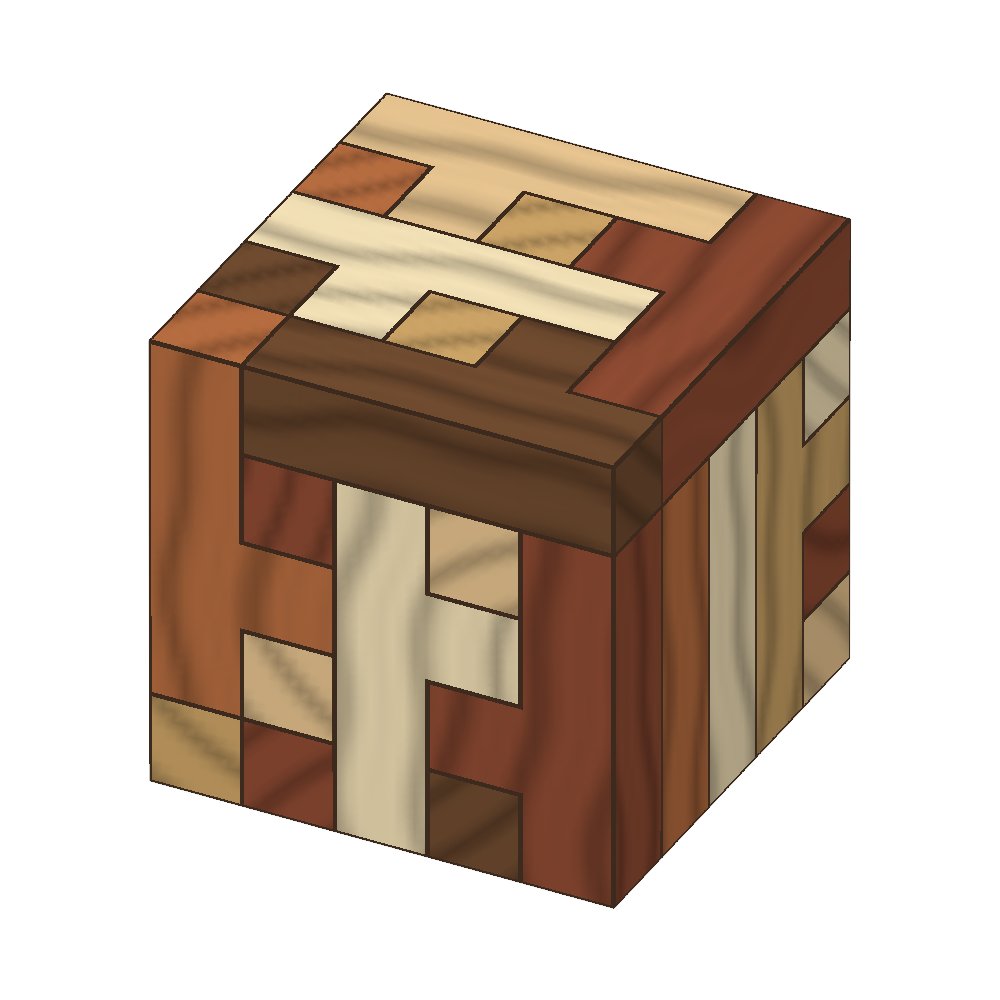
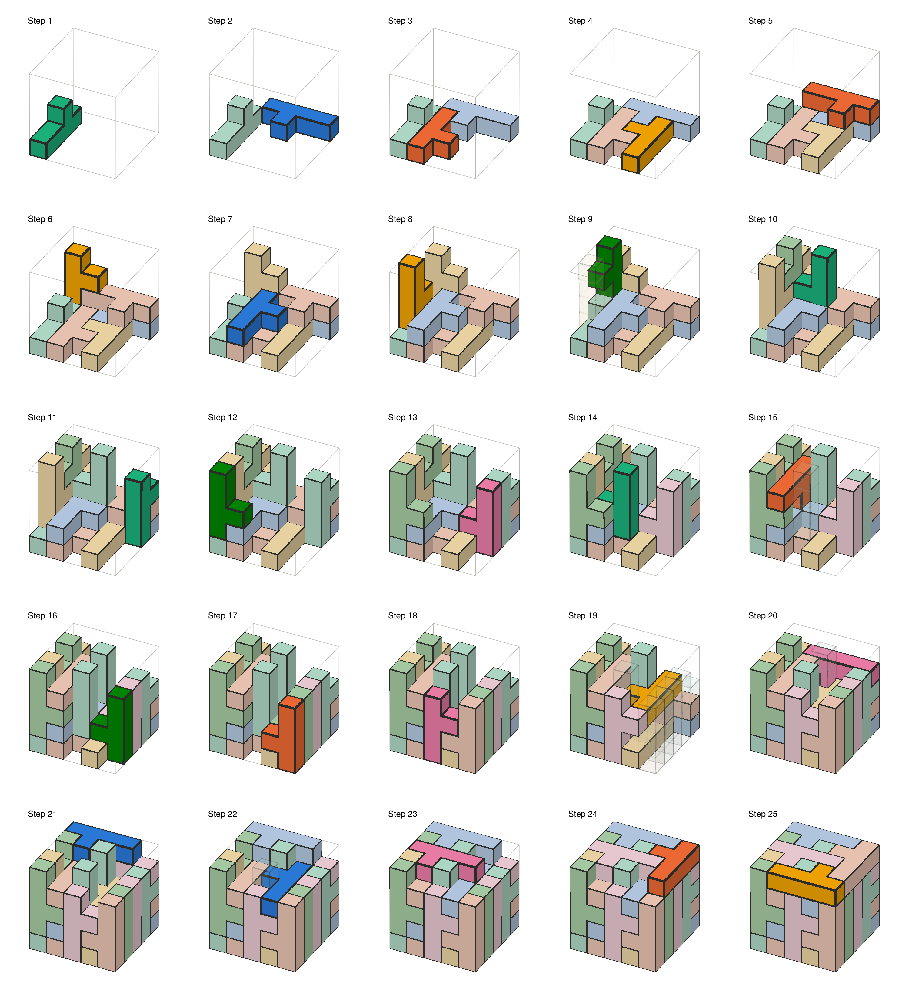
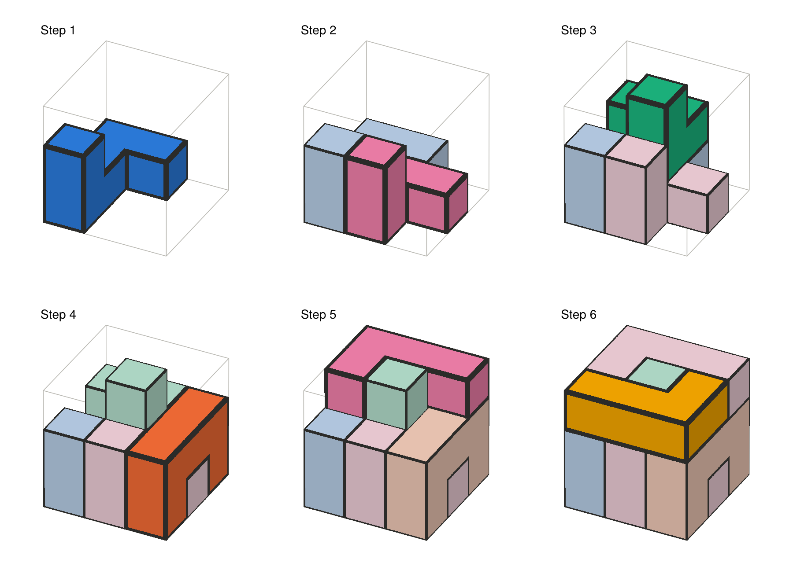

PolycubePuzzles.jl
PolycubePuzzles.jl solves packing puzzles: fill a target shape with a given set of pieces. It works in any dimension (flat polyomino puzzles, polycube puzzles like the Soma cube, and beyond), finds or counts every solution, counts them up to symmetry, and draws step-by-step assembly instructions.

Installation
using Pkg
Pkg.add(url = "https://github.com/mcvmcv/PolycubePuzzles.jl")Plotting needs a Makie backend, such as CairoMakie for images or GLMakie for interactive 3D. Loading one switches the plotting functions on.
A first puzzle
Twenty-five copies of the Y pentacube (four cubes in a row, with one more on the second) fill a 5×5×5 cube:
using PolycubePuzzles
Y = shape"""
XXXX
.X..
"""
Y3 = Shape([(c..., 1) for c in Y]) # the same piece, as 3D cells
p = Puzzle(box(5, 5, 5), Y3 => 25)
sol = solve(p; limit = 1)[1] # a solution, printed layer by layer
count_solutions(p) # 60672
count_solutions(p; symmetry = :all) # 1264 essentially different solutionsand with a Makie backend loaded, plot_steps(sol) draws building instructions:

A puzzle given by its solution
If you have a puzzle and a solution, give each piece as the cells it occupies. Solution builds the solution and checks it, reporting any overlap, gap, or cell outside the target:
pieces = [
[(1,3,1), (2,3,1), (3,3,1), (3,2,1), (1,3,2)],
[(1,2,1), (2,2,1), (2,1,1), (1,2,2)],
[(1,1,1), (3,1,1), (1,1,2), (2,1,2), (3,1,2)],
[(2,2,2), (3,2,2), (3,3,2), (2,2,3)],
[(2,3,2), (2,3,3), (3,3,3), (3,2,3), (3,1,3)],
[(2,1,3), (1,1,3), (1,2,3), (1,3,3)],
]
p = Puzzle(box(3, 3, 3), [Shape(c) => 1 for c in pieces])
count_solutions(p; symmetry = :rotations) # 24
sol = Solution(p, pieces)
plot_steps(sol; columns = 3)
Where next
- Describing puzzles: shapes, ASCII art, piece counts and reflections.
- Solving: finding and counting solutions, symmetry, and threads.
- Assembly and plots: building orders, sliding pieces in, drawing instructions in flat colours or wood, exploring them interactively, and printing them as a PDF booklet.